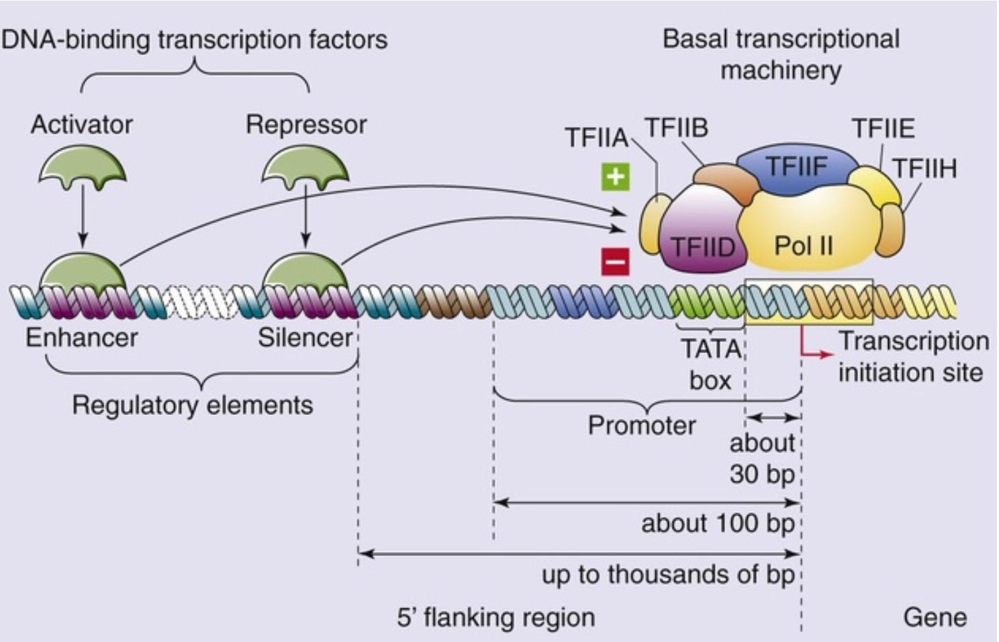

BIO103 · 第 11 章
转录：原核与真核
Transcription in Prokaryotes & Eukaryotes
虚线下划线为术语；悬停查看中文、英文与释义，完整词典见“术语”。
本章目录
本讲先讲转录与翻译的定义，再以细菌为例拆解转录的三要素、启动子、σ 因子、起始、延伸与两种终止方式，最后转到真核的三种 RNA 聚合酶、通用转录因子与 pre-mRNA 加工。
本章要点
- 转录是以 DNA 为模板合成 RNA；翻译是以 mRNA 为模板合成多肽，两者是中心法则的两个步骤。
- 原核转录只需 DNA 模板、RNA 聚合酶与四种 rNTP，不需要引物。
- RNA 聚合酶沿模板 3′→5′ 阅读，RNA 按 5′→3′ 合成；转录起点记为 +1。
- 细菌启动子有 −35 盒（TTGACA）与 −10 盒（TATAAT，Pribnow 盒），由 σ 因子识别。
- 终止分 Rho 依赖（Rho 解旋酶破坏 RNA-DNA 杂合）与 Rho 非依赖（GC 富集发夹 + U 串）。
- 真核有三种核内 RNA 聚合酶，pre-mRNA 由 RNA 聚合酶 II 合成，需要通用转录因子在 TATA 盒组装起始前复合体。
- pre-mRNA 经 5′ 加帽、3′ 加 poly-A 尾与剪接成熟，加帽加尾还负责出核、防降解与帮助核糖体结合。
11.1 转录与翻译：定义与信息流
转录transcription是利用 DNA 中的信息合成 RNA 的过程。两种核酸用同一种“语言”的不同书写形式，因此信息只是被“抄写”过去，不需要换码。对编码蛋白质的基因而言，产物是信使 RNAmessenger RNA (mRNA)，它把遗传信息从 DNA 带到细胞的蛋白质合成机器。
翻译translation是利用 mRNA 中的信息合成多肽的过程。这一步发生了语言转换：细胞必须把 mRNA 的核苷酸序列解读为多肽的氨基酸序列。翻译的场所是核糖体ribosome，它使氨基酸按顺序连接成链。
这与上一章的复制形成对照：复制是 DNA → DNA，保留全部信息；转录是 DNA → RNA，只抄写需要表达的部分；翻译是 RNA → 蛋白质，把四种碱基的语言换成二十种氨基酸的语言。
L13 p.4–5
11.2 原核转录的三要素
细菌的 mRNA 合成只需要三样东西：
- DNA 模板（template）。
- DNA 依赖的 RNA 聚合酶DNA-dependent RNA polymerase (RNAP)：负责合成所有类型的 RNA。
- 核苷酸前体：核糖核苷 5′-三磷酸（rNTP），即 ATP、UTP、GTP、CTP，作为聚合酶的底物。
聚合时，进入的 rNTP 与模板碱基形成氢键，随后释放焦磷酸（PPi），并形成磷酸二酯键。RNA 链中没有 T，凡 DNA 模板上是 A 的位置，RNA 中掺入的是 U。
新合成的 RNA 与模板链互补；若把 DNA 双链中的另一条（非模板链）拿来比较，RNA 的序列与它相同，只是 T 换成 U。因此非模板链称为编码链coding strand，模板链称为非编码链（noncoding strand）。写基因序列时默认给的是编码链，这一点在判断转录产物时非常关键。
L13 p.9–12
11.3 密码子与阅读方向
mRNA 上的密码子由三个碱基组成，分别称为第一位、第二位、第三位，沿 mRNA 按 5′→3′ 方向阅读。64 个密码子中，AUG 既编码甲硫氨酸（Met），又作为核糖体开始翻译的起始信号；UAA、UAG、UGA 三个是终止信号，指示核糖体在此结束翻译。
密码子表是简并的：多数氨基酸有多个密码子；这也是后续“沉默突变”能够存在的原因。起始密码子与终止密码子的位置决定了阅读框，因此 5′ 端之前的序列（5′ UTR）不被翻译，真正的编码从起始密码子开始。
一个常见的练习：若 DNA 模板链上某三联体为 5′-ATC-3′，则转录出的 mRNA 密码子是什么？模板按 3′→5′ 阅读，mRNA 与模板反平行互补，因此答案是 5′-GAU-3′（编码天冬氨酸）。若题目给的是编码链 5′-ATC-3′，答案则是 5′-AUC-3′。
L13 p.13–15
11.4 原核 RNA 聚合酶与启动子
与 DNA 聚合酶不同，RNA 聚合酶能从零开始：它不需要把第一个核苷酸加到已有引物上，可以直接把两个游离的 rNTP 连接起来。这是转录与复制在化学起点上的根本差别，也是 RNA 聚合酶不需要引物的原因。
细菌只有一种 RNA 聚合酶，由五个亚基组成：两个 α 亚基、一个 β、一个 β′、一个 ω。ω 亚基对转录并非必需，但有助于稳定酶；σ 因子则控制聚合酶与启动子的结合。
启动子promoter是 RNA 聚合酶结合并起始转录的 DNA 序列，通常位于转录起点上游。细菌启动子有两个保守元件：−35 区（−35 box）为 5′-TTGACA-3′；−10 区为 5′-TATAAT-3′，又称 Pribnow 盒Pribnow box。σ 因子同时识别这两处序列，使聚合酶跨在起点上。细菌中标志转录结束的序列称为终止子terminator。
Clean vector diagram of a bacterial promoter: a horizontal DNA duplex with the -35 box TTGACA and the -10 box TATAAT labeled upstream of the transcription start site +1, RNA polymerase with sigma factor bound over the promoter, the DNA strands separated into a 12-14 bp transcription bubble, and the first RNA nucleotides added at +1. Flat 2D, thin 1.5 px strokes, muted slate blue and warm grey palette, white background, English labels, no cartoon, no gradient, no shadow.
L13 p.16–20
11.5 σ 因子与转录起始
σ 因子sigma factor同时结合 RNA 聚合酶与启动子 DNA，把酶带到正确的起点。它能识别约 −10 bp 与约 −35 bp 两处序列，并协助聚合酶完成三件事：在转录起点处把 DNA 两条链分开；把编码链送入聚合酶的活性中心；确保转录从 +1 开始。
起始过程可拆为五步：
- RNA 聚合酶识别并结合启动子。
- 聚合酶分开 DNA 双链，使模板链的碱基可与 rNTP 配对。
- 约 12–14 个碱基对的模板链被解开。
- 聚合酶内这段 12–14 bp 的区域称为转录泡transcription bubble。
- 当 RNA 链的前两个核糖核苷酸由磷酸二酯键连接起来，起始即告完成——此后进入延伸。
“起始完成”的判据是第一个磷酸二酯键的形成，而不是聚合酶结合上启动子。这一点常被考到：结合只是起始复合体形成，真正起始以共价键出现为准。
L13 p.21–26
11.6 延伸与 RNA 聚合酶的多重功能
进入延伸后，RNA 聚合酶沿模板链 3′→5′ 移动，每读到一个碱基就按配对规则掺入相应的 rNTP，并催化 3′-OH 与进入核苷酸 α-磷酸之间形成磷酸二酯键，释放 PPi。RNA 链因此按 5′→3′ 方向生长，与模板形成一段短暂的 RNA-DNA 杂合。
讲义把 RNA 聚合酶的功能列为六项：在 DNA 上搜寻起始位点；解开一小段双螺旋产生单链模板；检测正确的 rNTP 并催化磷酸二酯键；按 3′→5′ 阅读模板；不需要引物即可起始；识别转录终止信号。
延伸过程中，转录泡随酶移动，RNA 的 5′ 端从出口离开，DNA 双链在其后方重新闭合。原核的转录产物不需要加工即可直接用于翻译，这是原核“转录与翻译同时进行”的前提。
L13 p.27, p.34–35
11.7 终止：Rho 依赖与 Rho 非依赖
细菌的转录终止有两种方式，区别在于是否需要一个额外的蛋白因子。
Rho 依赖终止Rho-dependent termination需要 Rho 解旋酶。Rho 结合在 RNA-DNA 杂合上，破坏杂合结构，使 RNA 聚合酶从 DNA 模板上脱落，转录随之终止。这种方式依赖终止子序列，但不需要 RNA 自身形成特殊结构。
Rho 非依赖终止Rho-independent termination（内在终止，intrinsic termination）只靠 RNA 序列本身。终止子由一段 GC 富集的反向重复序列（inverted repeat）加上其后约七个 U 残基组成。转录出的 RNA 中，反向重复区自身配对形成稳定的 GC 富集茎环（stem loop），紧跟其后是一段 U 富集区，与模板的 dA 形成 dA-rU 配对——而 dA-rU 是最弱的碱基配对。
茎环结构使 RNA 聚合酶停顿，随后脆弱的 dA-rU 杂合解离，RNA 释放，转录终止，全程不需要 Rho 解旋酶。
Clean vector diagram of a rho-independent terminator: an RNA transcript forming a GC-rich stem loop followed by a U-rich stretch, the RNA polymerase paused at the terminator, and the weak dA-rU base pairs shown dissociating to release the RNA. Flat 2D, thin 1.5 px strokes, muted slate blue and warm grey palette, white background, English labels, no cartoon, no gradient, no shadow.
L13 p.28–30
11.8 真核转录的复杂性与三种 RNA 聚合酶
真核转录的化学本质与原核相同，但调控与加工复杂得多。讲义把差异归为三点：转录主要在核内进行，区室化使基因表达可以获得时间上的调控，并使 mRNA 能被选择性地运往核糖体所在的细胞质；mRNA 需要加工（5′ 加帽、3′ 加 poly-A、剪接）并从核运往细胞质；非编码 RNA 的种类更多。此外，表观遗传因素在真核中起重要作用。
真核细胞核内至少有三类 RNA 聚合酶。合成 pre-mRNA 的是 RNA 聚合酶 IIRNA polymerase II；另外两类转录的 RNA 不被翻译为蛋白质（如 rRNA、tRNA 等）。相比之下，细菌只有一种 RNA 聚合酶，同时合成 mRNA 与其他 RNA。
真核转录还需要 rNTP 与启动子之外的元件：启动子中的 TATA 盒、起始序列、下游启动子元件（DPE）、TFIIB 识别元件（BRE）；以及转录因子、增强子/沉默子、激活蛋白/介导蛋白。线粒体也有 DNA，使用一种专门的 RNA 聚合酶转录。
L13 p.36–40
11.9 增强子、通用转录因子与起始前复合体
真核转录起始由两类转录因子共同控制。通用转录因子general transcription factors是 RNA 聚合酶 II 在大多数启动子上起始所必需的；特异性转录因子则只在特定基因、特定时间与位置起作用，负责精确调控。
相关 DNA 元件与蛋白的定义需要成组记忆：增强子enhancer是远离启动子的 DNA 序列，结合激活蛋白以提高转录速率；响应元件response element是响应特定信号的增强子；沉默子silencer结合阻遏蛋白，抑制转录；激活蛋白activator是结合 DNA 以改变该基因表达水平的蛋白；介导蛋白mediator是多蛋白复合体，与转录因子相互作用并帮助形成起始复合体。
TATA 盒的作用类似 E. coli 的启动子：为 RNA 聚合酶 II 定位，使转录从正确位置起始。组装顺序为：TFIID 的 TBP 亚基首先结合 TATA 盒 → TFIIA 与 TFIIB 结合（TFIIB 的 α 螺旋结合 TATA 盒上游，最强启动子含优化的 BRE 序列）→ TFIIF 与 Pol II 结合，把聚合酶定位到起点 → TFIIE 结合，为 TFIIH 提供停靠位点 → TFIIH 结合，起始前复合体组装完成。TFIIH 的解旋酶活性利用 ATP 水解在起点处解开 DNA 双链。

Clean vector stepwise diagram of RNA polymerase II preinitiation complex assembly at a TATA box promoter: TFIID with its TBP subunit bound to the TATA box, then TFIIA and TFIIB added, then TFIIF and Pol II positioned over the start site, then TFIIE, then TFIIH completing the complex and unwinding DNA with ATP. Steps numbered 1 to 5. Flat 2D, thin 1.5 px strokes, muted slate blue and warm grey palette, white background, English labels, no cartoon, no gradient, no shadow.
L13 p.41–47
11.10 pre-mRNA 加工与真核终止
真核细胞在把信息送出核之前，会在核内对 pre-mRNA 进行加工：两端被修饰，内部一些区段被切掉，其余部分拼接起来，最终产生可翻译的 mRNA。
5′ 加帽5′ capping：在转录出前 20–40 个核苷酸后，5′ 端加上一个修饰的鸟嘌呤核苷酸。3′ 加尾3′ polyadenylation：在 3′ 端由酶加上 50–250 个腺嘌呤核苷酸，形成 poly-A 尾。帽子与尾巴都不被翻译，5′ UTR 与 3′ UTR 也不被翻译。
帽子与尾巴有三项共同功能：帮助成熟 mRNA 从核输出到细胞质；保护 mRNA 不被水解酶降解；在 mRNA 到达细胞质后帮助核糖体结合到 5′ 端。
剪接splicing由剪接体spliceosome完成。剪接体是蛋白质与小 RNA 组成的大复合体，结合在内含子上的若干短序列，切除内含子（随后被迅速降解），并把两侧的外显子连接起来。小 RNA 不只参与剪接体的组装与剪接位点识别，还催化剪接反应本身。
同一个初级转录本可以按不同方式剪接，产生不同的 mRNA，称为可变剪接alternative RNA splicing。讲义举例：同一基因的转录本，有的保留外显子 3，有的保留外显子 4，最终翻译成不同但相关的肌肉蛋白。选择哪些区段作为外显子，由细胞类型特异的调节蛋白结合初级转录本内的调控序列来决定。
真核的终止与加工耦合：RNA 聚合酶 II 转录出 poly-A 信号序列（AAUAAA），该序列出现在 pre-mRNA 中后立即被核内蛋白结合；在 AAUAAA 下游约 10–35 个核苷酸处，这些蛋白把 RNA 转录本从聚合酶上切下，释放 pre-mRNA。5′ 帽在转录起始后不久即加上，剪接则在转录仍在进行时就开始。

Clean vector diagram of eukaryotic pre-mRNA processing: a primary transcript with exon 1, intron, exon 2, intron, exon 3; a 5' cap drawn as a modified guanine added at the 5' end; a poly-A tail of 50-250 adenine nucleotides at the 3' end; a spliceosome looping out each intron as a lariat and joining the exons; final mature mRNA with cap, joined exons and poly-A tail. Flat 2D, thin 1.5 px strokes, muted slate blue and warm grey palette, white background, English labels, no cartoon, no gradient, no shadow.
L13 p.50–62